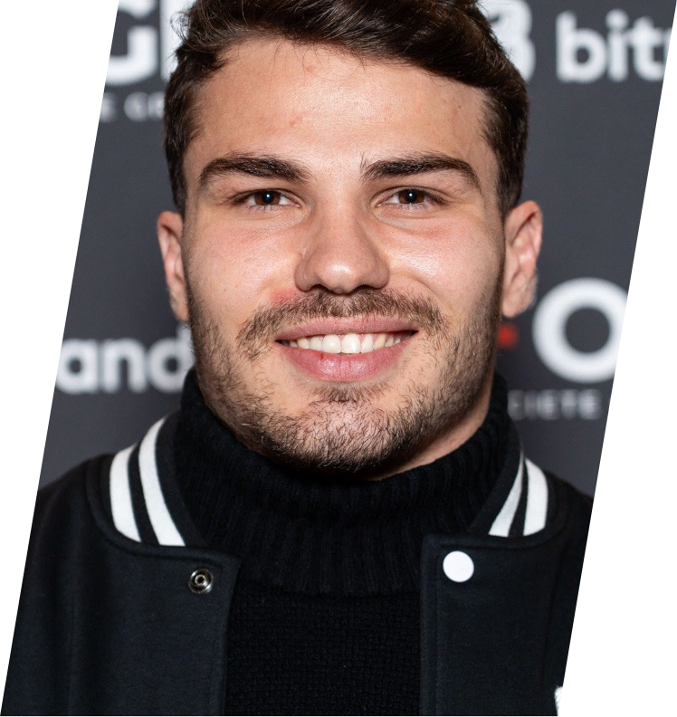

|  | |
Antoine Dupont (born 15 November 1996) is a French professional rugby union player who plays as a scrum-half for Top 14 club Toulouse and captains the France national team. Dupont has won 39 individual accolades in his career, including the World Rugby Men's 15s Player of the Year award in 2021 and the World Rugby Men's Sevens Player of the Year in 2024. He is the first French player to win the Men’s Sevens World Rugby Player of the Year award. He is also the first and only rugby player ever to have won both the Men’s 15s and the Men’s Sevens World Rugby Player of the Year awards in one's career. He has also won a shared record of three Six Nations Player of the Championships, the most by a French player. |